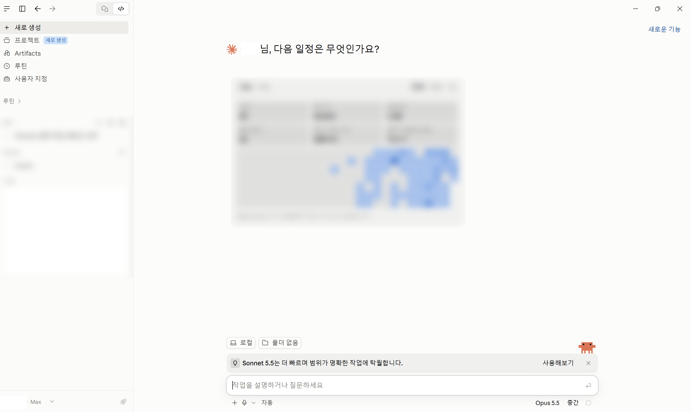

대화만 하던 AI에서
일을 해주는 AI로
선생님을 위한 클로드 코드(Claude Code) 입문
오늘 이 세 가지만 가져가세요
클로드 vs 클로드 코드
무엇이 다르고,
왜 더 유용할까?
요금과 모델 고르기
어떤 플랜, 어떤 모델을
쓰면 될까?
잘 쓰는 법과 설치
꼭 알아야 할 개념 3가지와
설치 방법
클로드 vs 클로드 코드
💬 묻고 답하는 AI
- 브라우저에서 claude.ai 접속
- 질문하기, 글 다듬기, 아이디어 얻기
- 결과는 화면 속 글자로만 받음
- 무료 버전 있음 + 유료 버전
🛠️ 내 컴퓨터에서 일하는 AI
- 내 컴퓨터에 설치해서 사용
- 파일·문서를 직접 만들고 고침
- 아이디어를 실제 결과물로 완성
- 유료 구독자만 사용 가능
👉 간단한 질문은 클로드로 충분, 문서·파일을 만들고 고치는 일은 클로드 코드가 유리
내 컴퓨터에서 일하는 AI, 'AI 에이전트'
AI가 내 컴퓨터의 파일을 직접 보고, 직접 작업해 주는 방식
📞 브라우저 AI = 전화 상담
"이 문서 어떻게 고치면 돼요?"
→ 말로 알려주면 내가 직접 고쳐야 함
→ 내 파일을 하나하나 복사해서 보여줘야 함
🧑💼 AI 에이전트 = 옆자리 보조 선생님
"이 문서 고쳐 주세요"
→ 내 컴퓨터의 파일을 직접 열어서 고쳐 줌
→ 폴더 안 여러 파일도 한 번에 처리
💡 클로드 코드가 바로 AI 에이전트입니다. 손발은 내 컴퓨터, 두뇌는 인터넷 너머에 있어서 인터넷 연결이 필요해요.
※ AI 두뇌까지 기기 안에서 돌아가는 '온디바이스 AI'(예: 스마트폰의 인터넷 없는 통역 기능)와는 다른 개념이에요.
학교에서는 이렇게 쓸 수 있어요
📄 문서 만들기
"다음 주 현장체험학습 가정통신문을 작년 양식에 맞춰 만들어 줘"
📊 자료 정리
"이 폴더의 수행평가 점수 파일들을 하나의 엑셀로 합쳐 줘"
🗂️ 파일 정리
"바탕화면 파일들을 학년·과목별 폴더로 정리해 줘"
💡 아이디어 → 결과물
"이 수업 아이디어로 학생용 활동지와 퀴즈 웹페이지를 만들어 줘"
👉 지금 보고 계신 이 발표 자료도 클로드 코드가 만들어 배포까지 완료했습니다.
개인용 플랜은 3가지 (기업·학교용은 별도)
Pro
$20/월
부가세 포함 약 $22
사용량: 기본 1배
수업 준비·문서 작업에 충분
Max 5x
$100/월
사용량: Pro의 5배
매일 오래 쓰는 사람
Max 20x
$200/월
사용량: Pro의 20배
개발자·전문가용
✅ 모두 정액제 — 매달 정해진 금액만 냄. 많이 써도 추가 요금(후불) 없음, 대신 한도에 닿으면 잠시 쉬어야 함
클로드 안에도 여러 '두뇌'가 있어요
| 모델 | 비유 | 특징 | 이럴 때 |
|---|---|---|---|
| Haiku | 🚲 자전거 | 가장 빠르고 가벼움, 사용량 적게 씀 | 간단한 질문, 맞춤법 확인 |
| Sonnet | 🚗 승용차 | 속도와 성능의 균형 | 대부분의 일상 업무 |
| Opus | 🚚 트럭 | 똑똑하고 꼼꼼함, 사용량 많이 씀 | 복잡한 문서, 큰 작업 |
🔄 클로드 코드에서 /model 이라고 입력하면 언제든 바꿀 수 있어요.
항상 최고 모델이 정답은 아니에요
🚚 동네 편의점에 가는데
트럭을 몰 필요는 없죠
좋은 모델일수록 한 번에 쓰는 사용량(토큰)이 커요
똑똑하게 나눠 쓰기
- 간단한 일 → Haiku / Sonnet
- 어렵고 중요한 일 → Opus
- 결과: 같은 Pro 요금으로 훨씬 오래 사용
컨텍스트 · 세션 · 메모리
컨텍스트 (Context)
책상 위에 펼쳐진 자료
지금 대화에서 AI가 기억하고 있는 모든 내용. 책상 크기는 정해져 있어요.
세션 (Session)
하나의 상담 시간
클로드 코드를 켜서 끌 때까지의 한 번의 대화. 새 세션 = 깨끗한 새 책상.
메모리 (Memory)
AI의 업무 수첩
세션이 바뀌어도 기억해야 할 것.
예: "나는 중학교 2학년 국어 교사야"
책상이 어질러지면 AI도 헷갈려요
🌀 컨텍스트 오염
가정통신문 얘기하다가 → 갑자기 시험 문제 → 다시 학급 행사…
서로 다른 일이 한 책상에 뒤섞임
🍂 컨텍스트 부패
대화가 너무 길어져 책상이 꽉 참
→ 앞 내용을 잊거나 엉뚱한 답
💸 그 결과: AI가 매번 쓸모없는 자료까지 다시 읽느라 토큰(사용량)이 낭비되고, 답의 품질도 떨어져요.
컨텍스트 정리법 3가지
① 일이 바뀌면 새 세션
/clear 입력
또는 클로드 코드를 껐다 다시 켜기
🧹 새 책상에서 시작
한 세션 = 한 가지 일
② 길어지면 요약 정리
/compact 입력
📝 지금까지 대화를 짧게 요약해서 책상 공간 확보 → 부패 방지
③ 잘못 간 부분만 되돌리기
Esc 두 번 또는 /rewind
⏪ 엉뚱하게 흘러간 대화를 원하는 지점까지 지우고 다시 시작
구독부터 첫 사용까지 4단계
구독하기 — claude.ai 가입 → 설정에서 Pro 플랜 결제
설치하기 — 가장 쉬운 방법: Claude 데스크톱 앱(claude.ai/download) 설치 후 'Code' 탭 사용
또는 명령어로 설치 · Windows PowerShell: irm https://claude.ai/install.ps1 | iex · Mac 터미널: curl -fsSL https://claude.ai/install.sh | bash
로그인하기 — 작업할 폴더에서 claude 실행 → 브라우저가 열리면 클로드 계정으로 로그인
말로 부탁하기 — "이 폴더에 있는 파일들이 뭔지 설명해 줘" 처럼 평소 말투로 시작!
💡 처음엔 중요한 파일이 없는 연습용 폴더에서 시작하세요. 파일을 고치기 전에 클로드가 허락을 물어봐요.
① 클로드 코드 다운로드
claude.com/claude-code 접속 → Windows용 다운로드 클릭

② 설치한 앱 실행
설치 후 윈도우 검색창에 claude 입력 → Claude 앱 실행

③ 클로드 코드 시작
앱 왼쪽 위의 </> 버튼을 눌러 클로드 코드 화면으로 전환

④ 클로드 코드 실행 화면
폴더를 고르고, 아래 입력창에 하고 싶은 일을 평소 말투로 적으면 끝!
